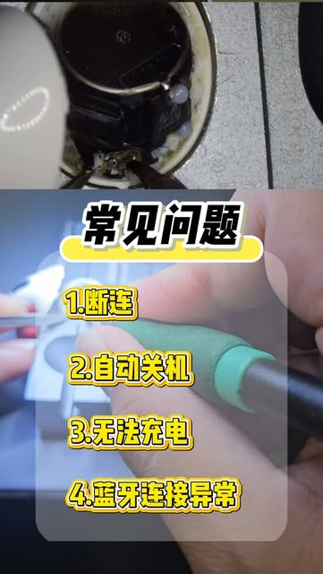
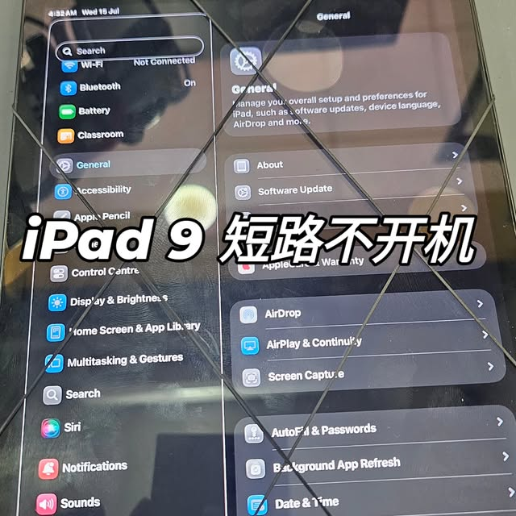

01PHONE
手机
iPhone、Samsung、Xiaomi、OPPO、Realme、Pixel 等，含折叠萤幕机型。
- 萤幕（外屏）更换
- 电池、充电、相机
- CPU、短路、不开机
新山 JB 装置维修 · 主机板级诊断
从萤幕、电池到主机板故障，先传症状给 Martin 判断值不值得修。门市每天 10:00 AM – 10:00 PM 营业。
修什么 / 01
先提供品牌、型号与症状，Martin 判断是否值得修、需要检查哪一层，再安排取机。
iPhone、Samsung、Xiaomi、OPPO、Realme、Pixel 等，含折叠萤幕机型。
萤幕、充电、电池与主机板问题。
不充电、不开机到显示与主机板故障。
使用两年以上的续航下降、断连多与电池老化有关。
价格参考 / 02
马来西亚市场参考价（RM），不是正式报价；实际以检测后为准。
判断外玻璃、面板、排线或显示线路。
检查电池健康、充电口与充电线路。
排线、短路、CPU 与板层问题需逐层检测。
萤幕、电池、充电与主机板问题。
Why trust us · 放心保障
把设备交出去，最怕被坑、修不好、资料外泄。这几点是我们的承诺。
换屏、换电池等更换类维修提供售后保固，保固期内同一问题免费复修。（保固天数待你确认，例：90 天）
检测后先报价，你同意了才动手，绝不先修后加价。（是否免费检测／不修不收费，待你确认）
维修只处理故障部件，不会翻看、复制或外传你的相册、讯息与个人资料。
使用原厂或同等级优质零件，事先说明零件等级与差价，不含糊。（零件政策待你确认）
症状自查 / 03
选装置、点症状，马上看到可能的维修方向与下一步。不确定也直接问 Martin。
👆 点一个症状，看维修方向
WhatsApp 问 Martin ↗IG 实修记录 / 04
以下内容来自 fixhub_martin 的公开贴文，每张卡都直接连回原贴。
检查后更换充电 IC，服务不只限于手机。
查看原贴 ↗
两年以上多半先查电池老化。
播放 Reel ↗
找出故障电容后解决。
查看原贴 ↗修复受损排线，不必整组更换。
查看原贴 ↗案例来自 @fixhub_martin ↗；网站仅整理公开内容。
维修流程 / 05
提供装置类型、型号、故障画面与所在区域。
附近免费运送；较远区域先说明额外费用。
每天 7:30 PM 后取货，星期日照常。
确认后维修，完工再安排送回。
维修实况 / 06
从故障判断到完工测试，每个步骤都有纪录。先看演示影片，了解处理前后的对照。
情境演示：萤幕更换、背盖修复与充电孔清洁的前后对照。实际维修画面请参考 IG 实修贴文。
门市地点 / 07
位于新山 Skudai 的 Bandar Baru Kangkar Pulai，每天 10:00 AM – 10:00 PM 营业。点按钮可直接在你手机的地图 App 中开启导航。
营业时间每天 10:00 AM – 10:00 PM；确切取送范围与远距离收费，仍以 WhatsApp／IG 与 Martin 确认为准。
关于 Martin / 08
Martin 拥有 9 年手机维修经验，专精 Apple 与 Android 装置，含折叠萤幕机型的复杂维修；核心项目为萤幕（外屏）更换、主机板故障排除与检测评估，也处理 iPad、MacBook 与 AirPods。
「让维修更专业，让交流更简单。」
常见问题 / 09
每天 10:00 AM – 10:00 PM 营业，方便跨境上班或晚下班的你；附近区域另有上门取送服务。
可先依症状提供方向，但同一症状可能来自不同零件；实际费用仍以检测后确认为准。
JB 附近区域免费运送；较远地址会收取额外运送费，安排前会先说明。
建议先备份资料、确认帐号与验证方式；进水机请勿充电或开机测试，尽快说明情况。